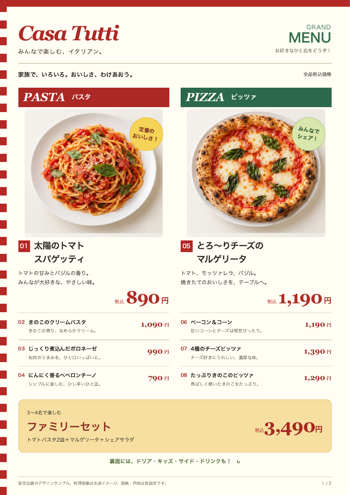
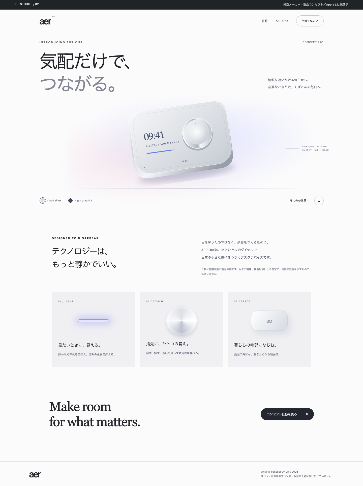
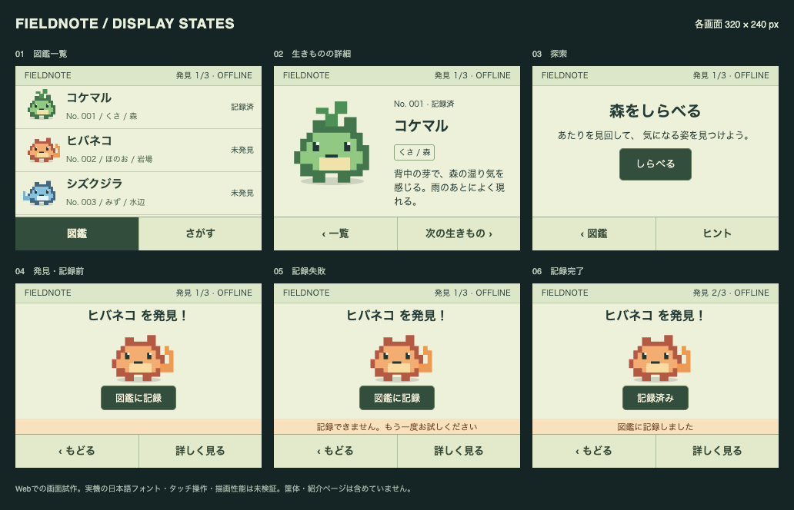
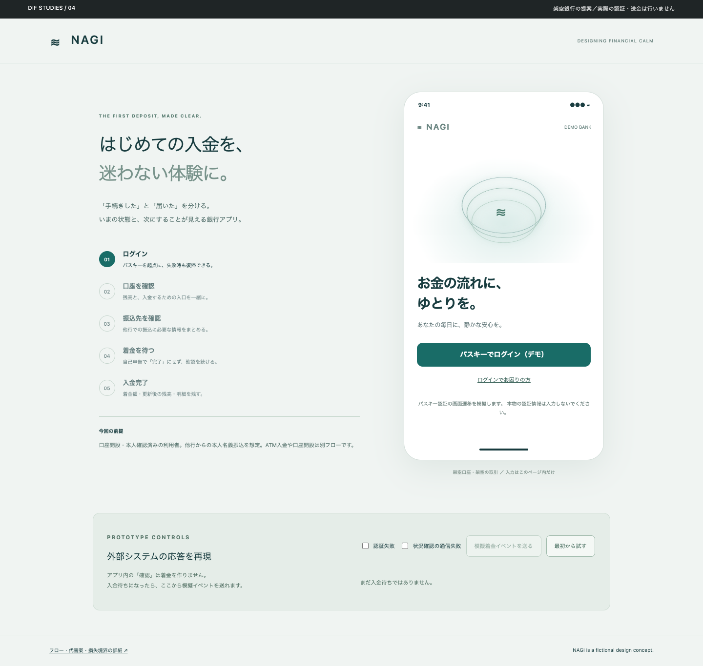

4つの体験。
4つの、デザインの答え。
家族のテーブルから、小さな探検へ。
意味と操作から組み立てた、4つのオリジナル提案。
カードから紙面・Web・図鑑画面・アプリを開けます。

01 / FAMILY RESTAURANT
Casa Tutti
A4表裏の卓上メニュー。料理・番号・価格を一覧に。
↗
02 / DEVICE MAKER
AER — Quiet technology
製品の存在感を中心にしたホームページ。
↗
03 / EMBEDDED DEVICE
FIELDNOTE
筐体や紹介文なし。320×240の画面を直接操作。
↗
04 / BANKING EXPERIENCE
NAGI
ログインから着金確認まで、迷わず進む。
↗